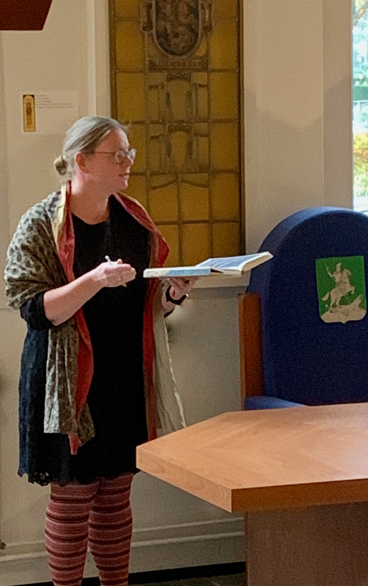

Middeleeuwen- en renaissancespecialist en sopraan Marsja Mudde (Ridderkerk, 1976) was van jongs af aan al gefascineerd door steeds oudere klassieke vocale muziek. Vanaf het begin van haar zangstudie aan het Fontys Conservatorium in Tilburg specialiseerde zij zich in de middeleeuwen en renaissance bij dr. Rebecca Stewart, hoofd van de afdeling Oude Vocale Ensemble Muziek. Na haar buitengewoon succesvolle eindexamenconcert over Sint Michael en Alle Engelen volgde zij nog vele specialisatiecursussen op masterniveau. Zo verdiepte zij zich in onder anderen het Parijse Notre Dame repertoire, Hildegard von Bingen, Moderne Devotie en gregoriaanse muziek uit alle Europese gebieden.
Al tijdens haar studie en sindsdien trad zij in binnen- en buitenland veelvuldig op met Ensemble Trigon, Ensemble Cantus Modalis, Ensemble Per Sonorem Vocis, haar eigen Ensemble Anime Beatitudinis Cantanti en anderen. Zo gaf zij concerten en workshops in Zuid Korea, Georgie, Duitsland, Portugal, Frankrijk en Belgie.
Marsja heeft tevens al sinds 2005 een bloeiende zanglespraktijk, waar vanwege haar specialisatie leerlingen uit heel Nederland op af komen. Verder doceert en assisteert zij in het opleidingscentrum Center Cantus Modalis, dat jaarlijks meerdere masterclasses voor professionele zangers organiseert rondom renaissance en vroeg barokke componisten en hun werk.
Binnen dit centrum werkt zij ook mee aan wetenschappelijk onderzoek en publicaties. Volgend jaar zal zij een tutor publiceren over de specifieke technieken die een zanger nodig heeft om middeleeuws en renaissance repertoire en andere modaal georienteerde muziek (zoals veel nieuwe klassieke muziek) uit te voeren.